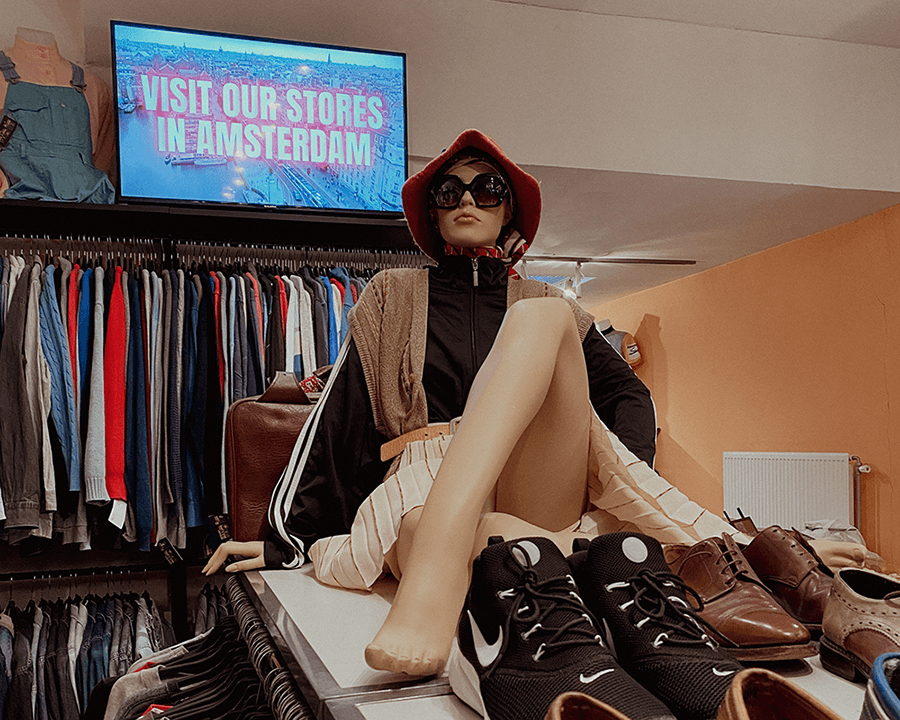
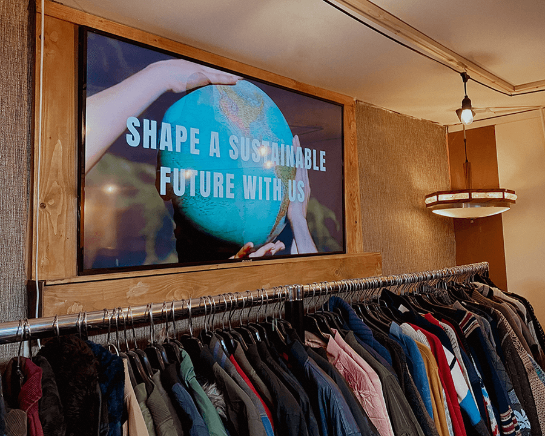
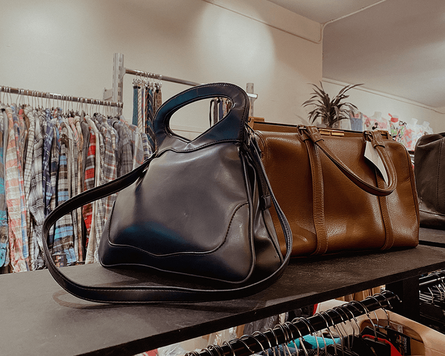
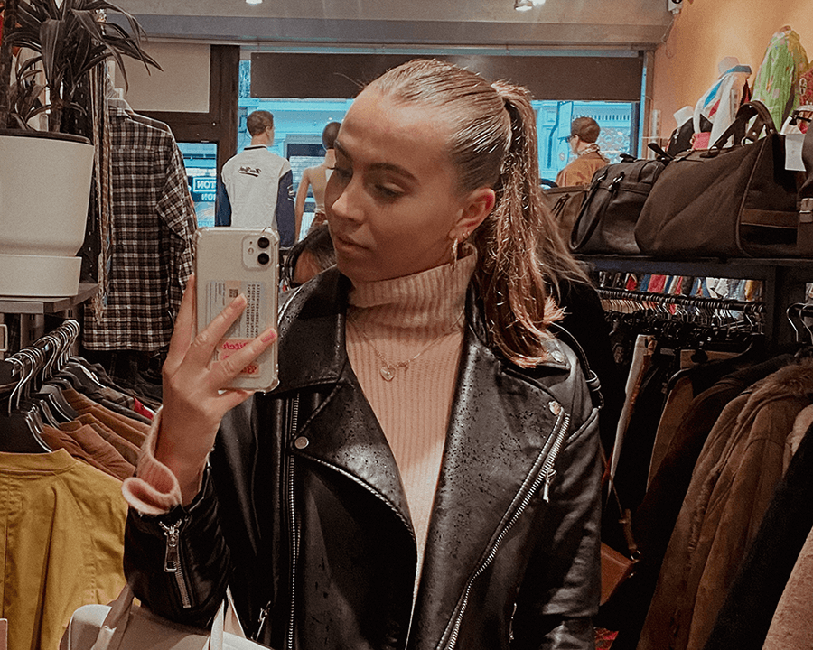

Over de winkel
Bij Ons Vintage is in 2008 opgericht in Amsterdam en heeft 2 locaties. Deze winkel is een van de
weinige
winkels in Amsterdam die gespecialiseerd is in de verkoop van retro-stijl kleding. Je vindt er
unieke
kleding uit de jaren zestig, zeventig, tachtig en negentig. Ze verkopen vrouwenkleding,
mannenkleding en
genderneutrale kleding. Naast kleding kun je er ook enkele klassieke accessoires en zelfs meubels en
gadgets uit de Technicolor-jaren kopen. Deze winkel is erg mooi om te zien, dus ga lekker op zoek
naar
die perfecte Levi's jeans voor een redelijke prijs. Ze hebben iedere week een nieuwe voorraad!


Waar staan ze voor?
Bij Ons Vintage wil mensen bewust maken over het feit dat vintage shoppen beter is voor het milieu.
De
mode-industrie is namelijk na de olie-industrie, de grootste vervuiler ter wereld. De milieuschade
neemt
toe naarmate de industrie groeit. Er zijn meerdere oplossingen en alternatieven om deze problemen
beetje
bij beetje te verhelpen. Bij Ons Vintage vindt dat de eerste stap ligt in het vergroten van het
bewustzijn en de bereidheid om te veranderen. Het tweede alternatief is om vintage te dragen!
Het aanbod

Ze hebben een groot aanbod van kleding in de winkel hangen. Denk aan (korte)broeken, jassen, vesten,
shirts, blouses, rokken, jurken en nog veel meer! Ik raad het zeker aan om een keer langs de winkel
te
gaan. Voor de mensen die liever online shoppen is er ook een website waar jij je bestelling kunt
plaatsen. Denk wel aan het milieu! Alles wat je laat bezorgen komt in extra verpakkingen. Als je
online
bestelt, kun je het ook afhalen in de winkel.
Contact & Openingstijden

Waarom vintage shoppen?
Steeds meer mensen kiezen voor een vintage look omdat het er stijlvol uitziet, omdat het past in de
tijd
van nu, en omdat het goed is voor het milieu. Als je iets tweedehands koopt, hoeft er niets nieuws
gemaakt te worden. Zo bespaar je grondstoffen, energie en afval die nodig zijn om nieuwe spullen te
maken. Vintage kleding is gemaakt van hoogwaardige, duurzame stoffen die lang meegaan. De kleding is
al
wat ouder, hierdoor weet je dat de kleding nog steeds in goede staat verkeert en niet snel zal
verslijten of scheuren. Het is een groenere, bewustere keuze. Er zijn zoveel
tweedehandsmogelijkheden om
uit te kiezen, dat het helemaal niet meer moeilijk is om een bewustere keuze te maken.